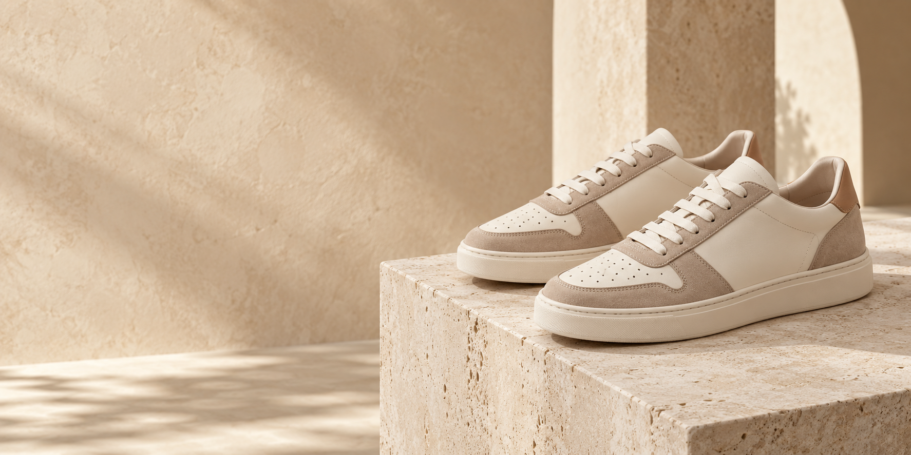

AURA SHORE01 / E-COMMERCE
Hình ảnh từ dự án AURA Shore Store
AURA Shore Store
Vai trò Trưởng nhóm · Java Backend
Hệ thống bán giày gồm trang khách hàng và khu vực quản trị. Tôi phụ trách ba nhóm chức năng catalog: sản phẩm, danh mục và thương hiệu.
- Phân công và theo dõi công việc nhóm; rà soát thay đổi trước khi tích hợp.
- Phát triển luồng quản lý sản phẩm, biến thể, danh mục và thương hiệu với Java và Spring Boot.
- Tách hành vi tìm kiếm danh mục theo đối tượng: khách không thấy danh mục ngừng hoạt động, quản trị viên vẫn tìm được để quản lý.
JavaSpring BootMySQLGitLab
Xem mã nguồn